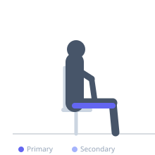
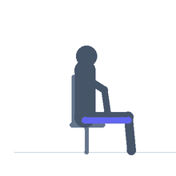

Exercise guide / Seated Dynamic Hamstring Flossing
Seated Dynamic Hamstring Flossing
A dynamic variant of seated hamstring neural flossing where the exerciser performs continuous alternating cycles of knee extension with ankle plantarflexion and knee flexion with ankle dorsiflexion. Unlike the static neural glide, the dynamic flossing version is performed rhythmically and with slightly greater amplitude, progressively working toward full knee extension as neural mobility improves. Used in advanced stages of sciatic nerve mobilization and hamstring neural tension rehabilitation.
Primary muscles
biceps femoris long head
semitendinosus
semimembranosus
Secondary muscles
Equipment
No Equipment (Bodyweight)


Starting position
- Sit upright in a chair with both feet flat on the floor. Maintain a neutral or slightly extended lumbar spine. The working leg is the one being flossed.
Setup
- No equipment needed. Sit toward the front of a chair so the foot can extend forward freely.
Steps
- Step 1: Begin with the working knee bent at 90 degrees, foot on the floor.
- Step 2: Extend the knee forward while simultaneously pointing the toes (plantarflexion) — this moderately tensions the sciatic nerve.
- Step 3: Immediately bend the knee back while pulling the toes toward the shin (dorsiflexion) — this releases tension on the distal nerve while tensioning it proximally.
- Step 4: Continue this rhythmic alternating motion for the prescribed repetitions. The cadence should be approximately 1 full cycle per 2 seconds.
Coaching cues
- Keep breathing — do not hold your breath during the leg extension
- Work within a range that creates mild tension only — no pain
- Gradually increase the knee extension range as your neural mobility improves over sessions
Breathing
- Breathe continuously throughout. Do not hold the breath.
Range of motion
- Work within a pain-free range. The range will progressively improve as neural mobility increases.
Tempo
- 1 repetition = 1 full extend-then-flex cycle. Approximately 2 seconds per cycle.
Common mistakes
- Creating sharp, electrical, or radiating pain — stop immediately if this occurs
- Extending the knee to end range if it reproduces symptoms — work within a comfortable range initially
- Performing the exercise too quickly — moderate pace allows neural tissue to adapt
Safety
- CRITICAL: Stop immediately if any sharp, electrical, radiating, or shooting pain occurs down the leg
- This is a progression from static neural flossing — ensure static flossing is tolerated before beginning the dynamic version
- Not appropriate for active disc herniations without physiotherapy supervision
Training
- mobility: 10–20 reps
- mobility: 2–3 sets
- Rest: {'mobility': 60}